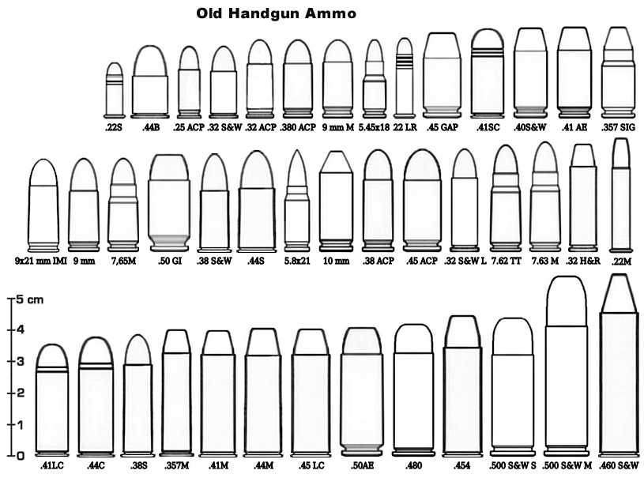
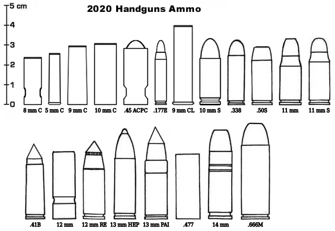

Cartridges haven't evolved a lot since their introduction in the 18th century. They still propel a dense metallic projectile by burning some powder, ignited by a blasting cap exploding when struck.
The great innovation of the late 20th century was the caseless ammo, pioneered by the H&K G11 rifle. In these cartridges, the metallic (usually brass, sometimes copper or steel) case is supressed, and the bullet and primer are held together by the propellant.
This save a significant amount of weight, and reduce the production cost.
Most weapons of 2020 use caseless ammo. But since most old weapons cannot easily be converted to caseless ammo, there are still a lot of cased ammo around. One upgrade is the PlastiCase ammo, replacing metal by a strong, heat-resistant plastic, reducing the weight and cost of the ammo. It can be made in a variety of designer colors too.
Many calibers (like .357, .44, .45...) are available both in pistol and revolver versions.
The most common of those calibers (9 mm, 10 mm...) can be found in PlastiCase variant.
| Caliber 5 mm |
Name .22 Short |
Damage 1D6-1 |
Cost for 10 $2 |

As with older calibers, two standards exists : bore diameter in millimeters (most common), and in inches fraction (.460 for 0,46 inches).
| Caliber 5 mm C |
Name 5 mm Caseless |
Damage 1D6 |
Cost for 10 $1 |
AP (Armor Piercing) : halve armor value, normal damage beyond armor.
